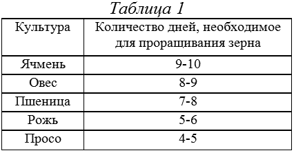

Самогон, водка и настойки. Исходное сырье .

Подготовка исходного сырья из зерновых (злаковых) культур
Процесс брожения и последующее изготовление напитка мы рассматривали на примере сахарного самогона, для которого используются дрожжи, вода и сахар. Но, как уже отмечено раньше, в производстве этого продукта могут быть использованы различные виды овощей, фруктов, злаковых и бобовых культур, трав, варенья, кондитерских изделий – халва, конфеты, мед и т. д. Список можно еще продолжать. Именно доступность и минимум затрат на производство обеспечили такую распространенность напитку.
Большой популярностью пользуется самогон, полученный из злаковых культур – ржи, пшеницы, проса, ячменя и т. д. Но для того чтобы напиток был качественным, нужно с ответственностью и терпением подойти к первому этапу – получению исходного сырья. Это только на первый взгляд кажется, что все просто и можно делать «спустя рукава». Ничего подобного, ведь именно качественная подготовка сырья на этом этапе гарантирует нам 85–90 % получения высококачественного самогона (позже вы в этом убедитесь сами).
Для получения крепких напитков используют крахмальное сырье из пшеницы или других злаковых культур. Процесс приготовления состоит из двух этапов:
1) приготовление солода (включает в себя проращивание Зерна, при этом необходимо следить, чтобы зерно не скисло);
2) приготовление солодового молока (смесь в определенной пропорции).
Приготовление солода
Хороший солод представляет собой основу высококачественного самогона. Для различных культур проращивание зерна имеет определенные периоды. Об этом следует помнить всегда. Самый длительный срок необходим ячменю: 9—10 дней. Затем следует овес: 8–9 дней. Пшеница прорастает за 7–8 дней. Ржи необходимо 5–6 дней, а просо прорастет всего за 4–5 дней. Для того чтобы не передержать пророщенное зерно, винокуру нужно составить таблицу сроков проращивания зерна и держать ее под рукой. Например, такую:

Как видите, культуры расположены по мере уменьшения срока, необходимого для проращивания. Для зерна нужно приготовить деревянный ящик. Он лучше всего подойдет для качественного и одновременного проращивания. Но если такой трудно найти, можно использовать эмалированную посуду (только не изготовленную из других металлов).
Зерно тщательно просеивается, вначале через крупное сито, затем через мелкое. В достаточно горячей воде (50–55 °C) его промывают, избавляясь от мусора и того, что всплывет на поверхность. Лучше всего использовать проточную воду, чтобы зерна были как можно чище вымыты. Но если такой возможности нет, то промывание повторяют 3–5 раз (вода все время должна быть горячей).
Затем необходимо зерна замочить. Для этого, как мы уже говорили, пригодна либо деревянная, либо эмалированная посуда.
Чистое зерно помещаем в подготовленную емкость и заливаем теплой водой так, чтобы все зерна находились в воде. По мере остывания воду удаляют и подливают более теплую. Это следует проделывать через 7–8 часов. Все время необходимо наблюдать за сырьем. Как только мы заметим, что шелуха легко отделяется от мякоти и на кожице образовалась маленькая трещина, означающая пробивание ростка, возьмем зернышко и попытаемся слегка согнуть. Если при сгибании зерно не ломается, то замачивание надо немедленно прекратить и перейти к следующему этапу – ращению солода.
Воду из посуды сливаем. Затем в темном помещении на противне разложим зерна так, чтобы слой не превышал 3 см (иначе возможно загнивание). Противень накрываем влажной тканью. В помещении необходимо строго соблюдать температурный режим. Температура не должна превышать 17–18 °С с влажностью не ниже 40 %.
В первые дни проращивания зерна нужно постоянно следить за тем, как протекает процесс. Каждые б часов зерно проветривают, перелопачивают и при необходимости увлажняют ткань. Чтобы снизить потери крахмала, в помещение ограничивают приток воздуха и постепенно увеличивают температуру. Но чем меньше дней остается до окончания данного процесса, тем тщательнее зерно перемешивают и охлаждают.
Чтобы не забыть, сколько дней мы уже проращиваем зерно и сколько еще осталось, необходимо записать дату начала процесса.
Существуют основные признаки, наличие которых говорит о том, что пора прекращать рост зерна:
1) ростки достигли определенной длины – от 0,5 до 0,6 см;
2) длина корешков составляет 1,2–1,4 см. Они сцепляются друг с другом;
3) зерна утрачивают мучной вкус;
4) при раскусывании раздается хруст;
5) зерна приобретают приятный огуречный запах.
Если мы обнаружили, что зерно обладает вышеперечисленными свойствами, то переходим к другому этапу – сушке солода.
Сначала приготовим место – сухое теплое помещение. Солод рассыпают в приготовленном для сушки месте и подвяливают. Необходимо самым тщательным образом следить за температурным режимом и влажностью воздуха в сушильне. Температура воздуха не должна превышать 40 °C.
Сушат до тех пор, пока влажность зерна будет составлять не менее 3–3, 5 %.
Сухой солод обладает следующими свойствами:
1) его размеры меньше, чем были до сушки;
2) на ощупь сухой;
3) при трении в руках корешки легко отделяются.
Убедившись, что солод достаточно высох, тщательно перетираем его руками и отделяем ростки. После чего просеиваем через сито.
Для солода необходимо приготовить подходящую емкость, это может быть стеклянная посуда. Просеянный солод высыпаем, плотно закупориваем и храним в сухом помещении.
Приготовление солодового молока
Опытные винокуры предпочитают для этого процесса использовать смесь различных солодов – ржаного, ячменного и просяного в соотношении 1:2:1. 1 % составляет ржаной солод, 2 % – ячменный и 1 % – просяной. Приготовленную смесь заливают горячей водой, температура которой 60~65 °C.
Смесь перемешивают, дают отстояться, после чего освобождают от воды, помещают в кофемолку и мелко перемалывают. Если нет кофемолки, можно воспользоваться ступкой. Перемолотую смесь помещают в емкость, доливают небольшое количество воды, температура не должна превышать 55 °C. Раствор тщательно перемешивают (для этой операции миксер подойдет как нельзя лучше). У нас должна получиться белая однородная жидкость. Для приготовления солодового молока не обязательно использовать сразу всю воду. Сначала берем небольшое количество, затем будем постепенно добавлять.
Получение солодового молока завершает процесс приготовления исходного сырья. Если вы следовали всем правилам, о которых здесь упоминалось, считайте, что 85 % качественного напитка вы уже имеете.
Следующий процесс – брожение, т. е. получение браги (см. «Брожение»).
Далее переходим к перегонке. Это реакция термическая (происходящая при определенных температурных режимах), во время которой сахар, находящийся в браге, раскладывается на этиловый спирт, воду и углекислый газ (см. «Перегонка»).
В заключение производится очистка (см. «Очистка»).
Подготовка исходного сырья из плодово-ягодных культур
Для получения самогона, обладающего высокими вкусовыми качествами и приятным ароматом, винокуры используют плодово-ягодное сырье. Это различные сорта яблок, груш, вишни, рябины, сливы, клубники, черники, смородины и т. д.
Качество готового продукта во многом зависит от качества и сорта исходного продукта. Лучше всего использовать зимние и осенние сорта. Это обусловлено тем, что в них содержится намного больше сахара, дубильных веществ и кислот, нежели в летних сортах. Но у летних яблок свое преимущество – выросшие на дереве и как следует созревшие, они получают гораздо больше ароматизирующих веществ по сравнению с зимними.
Плоды айвы также служат прекрасным сырьем в изготовлении напитка. Ее срывают зеленой, а спелой она считается после того, как полежит некоторое время в сухом помещении, иными словами, дойдет. Спелые плоды приобретают желтую окраску, сильный аромат, мягкость. Увеличивается количество сахара, красящих веществ, однако уменьшается количество дубильных.
В качестве исходного сырья широкое применение получили различные сорта рябины. Так как эти ягоды не имеют достаточной кислотности и несколько терпковаты, опытные винокуры рекомендуют добавлять к ним более кислые ягоды. Например, красную смородину. Для приготовления исходного сырья ягоды берут в соотношении 2:1, где две части составляет черноплодная рябина и одну часть – красная смородина.
Чтобы снизить горьковатый вкус рябины, ягоды желательно собирать после первых морозов. Увеличить сахаристость и улучшить аромат ягод рябины поможет легкое подвяливание.
В большинстве регионов в качестве исходного сырья используют различные дикорастущие ягоды: чернику, землянику и т. д.
Черника – очень нежная ягода. Поэтому приступают к ее переработке непосредственно после сбора. Если же ягода скиснет, это отразится на качестве готового напитка, так как устойчивый неприятный запах сохранится и после переработки.